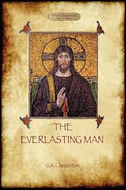
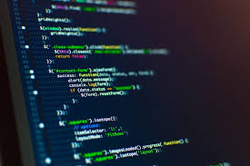

2020
Posted on January 1, 2020 by moronfolu motunrayo.
I have being talking and planning for 2020 for a while now. Hell, I have been prepared to enter 2020 since late November. It feels so crazy because I have never been the “new year – new me, new year – new goals” kinda person, instead I have always been the “it is just another day/year, stop being so drammatic” kinda person.
But, here I am in the wee hours of the morning beaming like a clown and feeling crazily enthusiastic about 2020 – hahahahahah, how people change!
I bet you are already wondering, why this much excitement about the year 2020?
Isn’t it just another year?
Well, I know it is another year, but then it is the beginning of a decade where almost everything happens (at least for me), but most importantly, it is also another opportunity to be World Class in the words of the tech guru – Unicodeveloper.
My 2020 Plans
If you fail to plan, you are planning to fail
…Benjamin franklin.
I don’t think people become World Class without planning or setting goals. Lack of concrete plans or realistic goals will only lead to utter failure, no matter the level of enthusiasm and optimism.
2019 was filled with me putting my energy in lotta things and as expected – I failed at some, was successful at some – but my enthusiasm never waned mainly because my Uncle kept telling me to keep doing stuff, that it was the perfect time for me to fail.
The failure and success I encountered opened my eyes to what mattered and consequently led to the clarity of my goals for the year 2020.
Goal 1: Read 12 Books for the Year.
I have no special talents, I am only passionately curious
…Albert Einstein
The last months of the year 2019 was filled with me being restlessly curious and seeking answers to so many things. In a bid to satisfying the curiosity, I will be reading 12 books that have been written to address the different aspect of my curiosity.
I am so curious that I am tempted to increase the number of books, but one of the things I learnt in 2019 is making realistic goals, so I think 12 is good enough – a book for a month. Some of the books will include “the Everlasting man” by G.K. Chesterton, “of Africa” by wole Shoyinka – still on the look out for more books.
Goal 2: Become a Badass Frontend Developer.
My interest in tech started in the funniest of ways (I will keep that to myself for now) and the interest has not waned a bit instead it has grown into a passion that keeps me up at night, bent over my monitor in a bid to write crazy codes.
I have always stalked Awwward sites just to look and marvel at the beautiful designs there and many a times I would find myself asking if it was a fellow human that made such exquisite designs. After much research, I’ve finally come to the realization that they were built by humans – one headed human to be precise.
One of my main goals this year is to not just be another Frontend developer in the Universe, but be one of those “cool developers” that is so good that her work(s) will be featured on Awwward and her craft will leave another newbie dumbfounded.
Goal 3: Workout
I worked out for some days in 2019 and the result was so cool that I was even attracted to myself at a time, but my lazy ass stopped working out and ended up leaving the year with big belly and a ass that is as flat as a pressed mattress – don’t tell me you don’t know working out makes your ass grow and look cute. Getting my sexy body back in 2020, on God.
Goal 4: Live
My goals are not arranged in the order of priority but if they were then this goal ought to come first.
Aldous Huxley once said, “" that every man’s mind is his private literature"“. No truer word have ever been said, I have successfully created a colorful and enviable literature in my mind that is hindering me from having normal human interaction (you’d want to live in my head if you could see the amazing structures in my head) – I execute plans in my mind, meet people, go on dates, live life to the fullest in my mind – but this has to change in 2020, I need to live more in the real world and have more physical interactions before i go crazy or something
Goal 5: Eat Well, Write more.
That is just it, eat more and definitely write more – or I think the right word is “be proud to show my work.”
Oh well, I have never written a plan like this before, and I must confess that I am kinda scared about it, there are tiny voices in my head asking different questions and making me doubt if I will be able to accomplish all these goals, but to hell with them, I’m doing this, no matter what it takes.
I will keep you in the loop by logging my progress here as often as i can
Also, if you are embarking on a course like this, then you should drop a message too, let’s do it together. Remember, the merrier the better.
Welcome to 2020 fellas – it is indeed another opportunity to be worldclass.